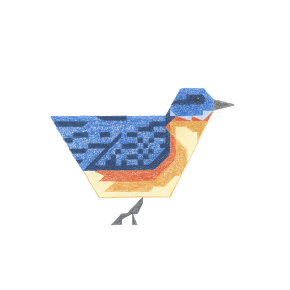
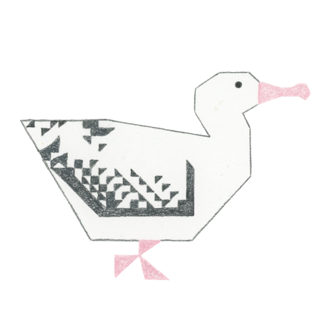
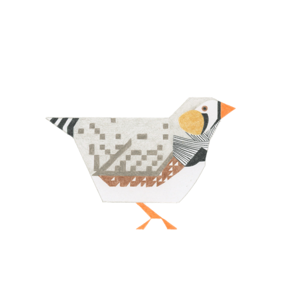
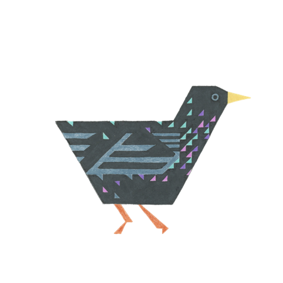
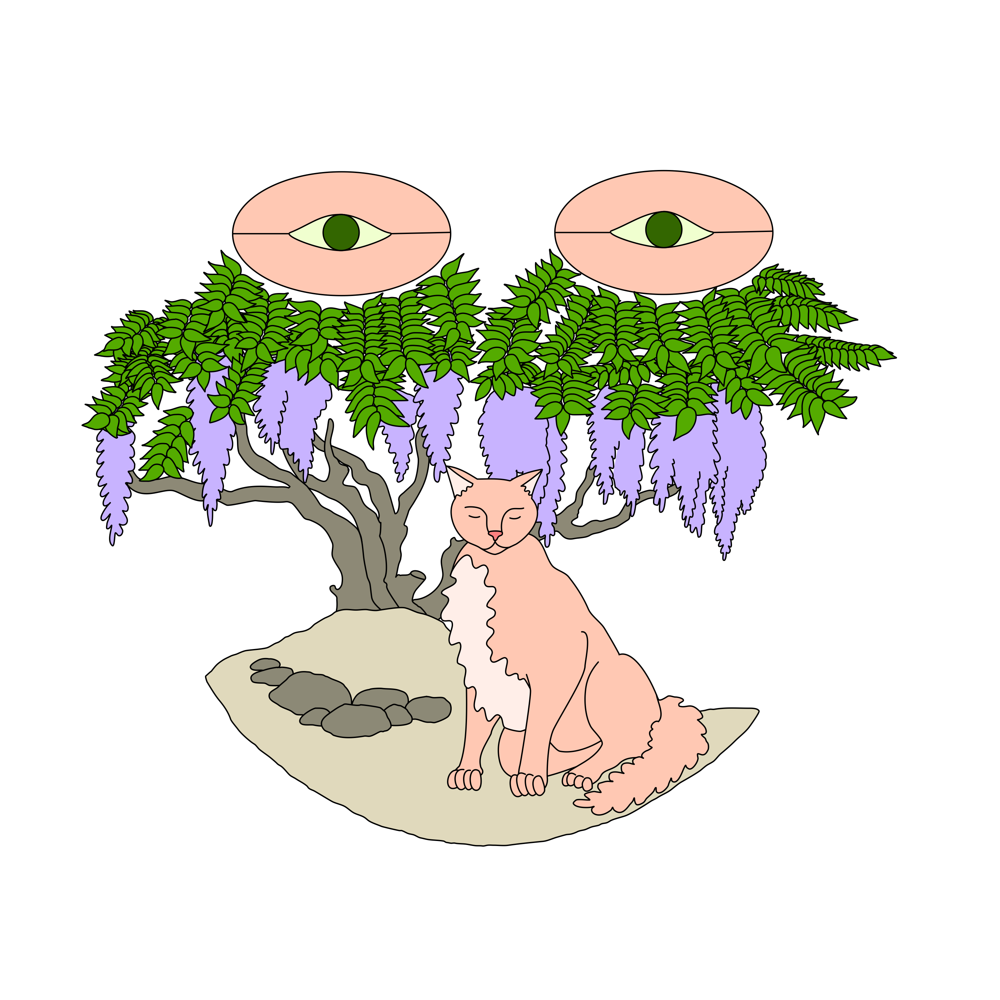

|  |  |  |  |
|  |
| 2015 | |||
|---|---|---|---|
| Q1 | January Flight Time |
February In the Pines |
March Rabbit of Chang'e |
| Q2 | April Vis Viva |
May In the Pines |
June Red-Eyed Bug |
| Q3 | July The Metaphorosis |
August Lobster Mechanics |
September Drifting Lithophanes |
| Q4 | October The Button |
November Evolution as Programming |
December Black Mustang |
| 2016 | |||
|---|---|---|---|
| Q1 | January Age of the Sail |
February Drone & the Bird |
March McLuhanism |
| Q2 | April West Village in Spring |
May Blood Machines |
June Hirsute Heart |
| Q3 | July Ice Therapy |
August Rue de Fleurus |
September Secret Garden |
| Q4 | October Looking at Animals |
November [Media Strike] |
December [Media Strike] |
| 2017 | |||
|---|---|---|---|
| Q1 | January Warp and the Weft |
February Black Box Gets Bigger |
March Schiaparelli Crater |
| Q2 | April Exquisite Corpse I |
May Rock Band |
June Old People Everywhere |
| Q3 | July Aquascapes |
August Beasts of Burden |
September Natural Dyes |
| Q4 | October Time - Speed - Distance |
November Pearls & Oysters |
December Signal Waves |
| 2018 | |||
|---|---|---|---|
| Q1 | January Address to the Incline |
February Our Magic Circle I |
March The Threshold |
| Q2 | April Temple Dragon |
May Protective Plants |
June The Tortoise & the Gun |
| Q3 | July Salt & Vinegar |
August You Go Out Searching for Poems |
September Bluebird's Birthday |
| Q4 | October Cyborg Symbiosis |
November Grounding Objects |
December The Basel Incident |
| 2019 | |||
|---|---|---|---|
| Q1 | January Human Groups as Techonlogy |
February Anthrotechonmisonmia |
March Snack Tree v1 |
| Q2 | April Destructive Metaphors |
May Planted Bibliography |
June Tuesday Dinner |
| Q3 | July Provenance |
August Xingtian & Jingwei |
September Snack Tree v2 |
| Q4 | October Dirt Rally |
November Herbsttag / Autumn Days |
December Our Magic Circle II |
| 2020 | |||
|---|---|---|---|
| Q1 | January The Pigeon of Please |
February The Tree of Peridot Green |
March Zoonotic Robogenesis |
| Q2 | April Exquisite Corpse I |
May atypical year |
June A Last Globular Gasp |
| Q3 | July Animal Crossing |
August Ode to Greta |
September Tarot Study |
| Q4 | October Cryptid Anthem |
November Hunting Elk |
December Poker Study |
| 2021 | |||
|---|---|---|---|
| Q1 | January Drinking to the Liffey |
February Agnes Luckemeyer |
March Random Forest |
| Q2 | April Exquisite Corpse II |
May Pokemon Snap |
June Tarot Practice |
| Q3 | July Our Magic Circle III |
August Un-Modernism |
September Fall in the Adirondacks |
| Q4 | October Harpoon Attribution |
November Minecraft II |
December Hootenanny |
| 2022 | |||
|---|---|---|---|
| Q1 | January |
February |
March |
| Q2 | April |
May |
June |
| Q3 | July |
August |
September |
| Q4 | October |
November |
December |